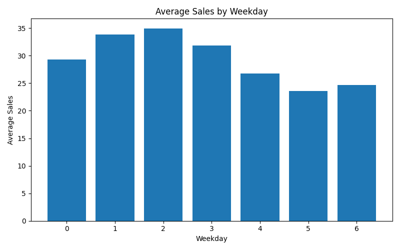

Demand Forecasting Report
Weekly Seasonality Analysis
This report analyzes how sales vary across weekdays to identify short-term demand patterns.
Visualization

Key Insights
- Peak demand: mid-week (weekday 2–3)
- Lowest demand: end of week (weekday 5–6)
- Stable pattern: consistent weekly cycle
Business Interpretation
Customer activity is highest mid-week and declines toward the weekend,
indicating predictable short-term demand cycles.
Modeling Implications
- Include weekday as a feature
- Use cyclic encoding
- Improves short-term prediction accuracy
Conclusion
Weekly seasonality is a strong driver of demand and must be incorporated into forecasting models.